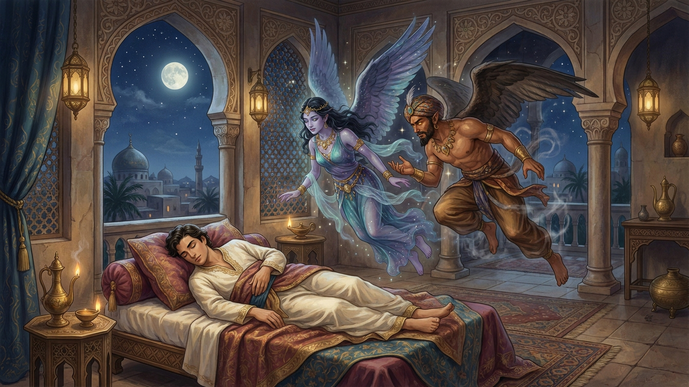
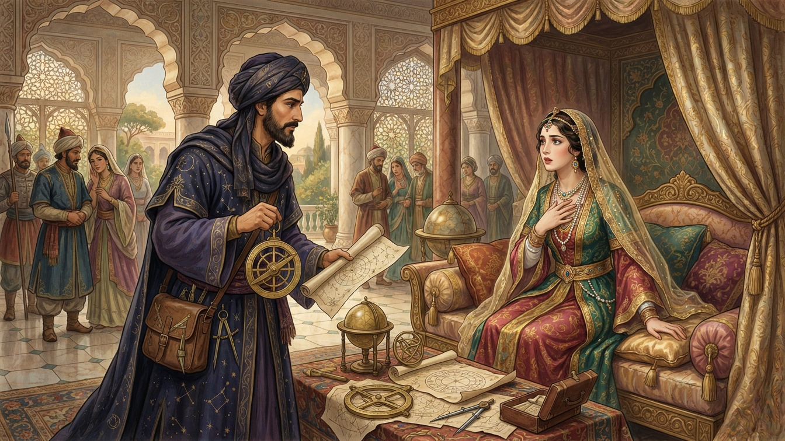
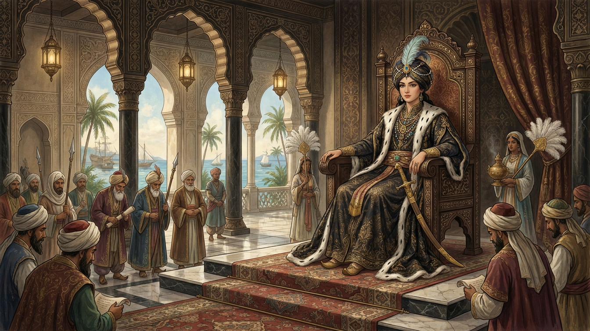

<meta charset="UTF-8">
<link rel="stylesheet" href="css/estilo1.css">
<link rel="stylesheet" href="css/libro1-estilos.css">
<link href="https://fonts.googleapis.com/css2?family=Open+Sans:wght@300;400;600;700&display=swap" rel="stylesheet">

<!-- Fragmento para inyectar en pagina.html (rutas relativas a pagina.html) -->
<article class="libro-detalle">

    <div class="libro-encabezado">
        <h2 class="titulo-seccion">Las mil y una noches</h2>
        <p class="libro-subtitulo">Relato: «Kamaralzamán y la princesa Budur, la luna más bella entre todas las lunas»</p>
    </div>

    <!-- Portada + ficha técnica -->
    <section class="libro-ficha">
        <figure class="libro-portada">
            
            <figcaption>Ilustración de portada</figcaption>
        </figure>

        <div class="libro-datos">
            <h3>Ficha del relato</h3>
            <ul>
                <li><strong>Nombre original de la obra:</strong> ألف ليلة وليلة (<em>Alf layla wa-layla</em>)</li>
                <li><strong>Nombre en español:</strong> Las mil y una noches</li>
                <li><strong>Relato:</strong> Historia de Kamaralzamán y la princesa Budur, la luna más bella entre todas las lunas</li>
                <li><strong>Autoría:</strong> Anónima y colectiva (recopilación de cuentos populares)</li>
                <li><strong>Época:</strong> Reunida entre los siglos VIII y XIV aproximadamente</li>
                <li><strong>Origen:</strong> Medio Oriente</li>
                <li><strong>Género:</strong> Cuento</li>
                <li><strong>Idioma original:</strong> Árabe</li>
            </ul>
        </div>
    </section>

    <!-- Audio -->
    <section class="libro-audio">
        <h3>Escucha la reseña</h3>
        <p>Toda la información de esta página, narrada en audio.</p>
        <audio controls preload="none">
            <source src="audios/kamaralzaman.mp3" type="audio/mpeg">
            Tu navegador no admite el elemento de audio.
        </audio>
    </section>

    <!-- Personajes -->
    <section class="libro-bloque">
        <h3>Personajes principales</h3>
        <div class="libro-personajes">
            <div class="libro-personaje">
                <h4>Kamaralzamán</h4>
                <p>El príncipe de gran belleza, hijo del rey Schahramán, que se niega a casarse.</p>
            </div>
            <div class="libro-personaje">
                <h4>La princesa Budur</h4>
                <p>La hija del rey Ghayur, señor de China, tan hermosa como el príncipe.</p>
            </div>
            <div class="libro-personaje">
                <h4>El rey Schahramán</h4>
                <p>El padre de Kamaralzamán, que desea verlo casado.</p>
            </div>
            <div class="libro-personaje">
                <h4>Maimuna y Dahnash</h4>
                <p>Los dos genios que unen el destino de los jóvenes.</p>
            </div>
            <div class="libro-personaje">
                <h4>El rey Armanos</h4>
                <p>El soberano de la isla de Ébano, donde llega Budur disfrazada.</p>
            </div>
            <div class="libro-personaje">
                <h4>Hayat-Alnefus</h4>
                <p>La hija del rey Armanos, que guarda el secreto de Budur.</p>
            </div>
        </div>
    </section>

    <!-- Resumen -->
    <section class="libro-bloque">
        <h3>Resumen</h3>
        <p>El rey Schahramán anhela un heredero y, tras muchos años, tiene un hijo, Kamaralzamán, de belleza extraordinaria. Cuando crece, el príncipe se niega a casarse, y su padre, enfadado, lo encierra en una torre. Allí lo descubre dormido la genia Maimuna, quien queda deslumbrada. Más tarde se encuentra con el efrit Dahnash, que le habla de la princesa Budur, hija del rey Ghayur de China, tan hermosa como el príncipe y también opuesta al matrimonio.</p>
        <p>Para saber quién es más bello, los genios llevan a Budur junto a Kamaralzamán y los despiertan por turnos. Ambos se enamoran al verse y se intercambian anillos, pero los genios devuelven a la princesa a su palacio. Al despertar, cada uno se desespera por encontrar al otro; Budur es incluso tenida por loca. Con ayuda de su hermano de leche y gracias al ingenio de Kamaralzamán, disfrazado de astrólogo, los jóvenes se reencuentran y se casan.</p>
        <p>Durante el viaje, un ave se lleva el talismán de Budur y ambos se separan. Budur, disfrazada con las ropas de Kamaralzamán, llega a la isla de Ébano, donde el rey Armanos la nombra su yerno y rey. Hayat-Alnefus guarda su secreto. Tras muchas pruebas, Kamaralzamán llega a la isla, y los esposos se reconocen. Todo se aclara, el rey Armanos se alegra y, al final, ambos viven en armonía.</p>
        <p class="libro-nota">Aviso: este resumen revela el desenlace del relato.</p>
    </section>

    <!-- Enseñanzas -->
    <section class="libro-bloque">
        <h3>3 enseñanzas del relato</h3>
        <ol class="libro-ensenanzas">
            <li>
                <strong>La perseverancia en el amor.</strong>
                Kamaralzamán y Budur superan la distancia, la separación y las pruebas sin dejar de buscarse.
            </li>
            <li>
                <strong>El ingenio ante la adversidad.</strong>
                El astrólogo disfrazado y el disfraz de Budur muestran que la inteligencia y la astucia ayudan a salir de los problemas.
            </li>
            <li>
                <strong>La lealtad y la solidaridad.</strong>
                Maimuna, el hermano de leche y Hayat-Alnefus apoyan a los protagonistas, y nos enseñan el valor de ayudar sin esperar nada a cambio.
            </li>
        </ol>
    </section>

    <!-- Ilustraciones -->
    <section class="libro-bloque">
        <h3>Ilustraciones de la obra</h3>
        <div class="libro-galeria">
            <figure>
                
                <figcaption>Los genios y el príncipe</figcaption>
            </figure>
            <figure>
                
                <figcaption>El astrólogo disfrazado</figcaption>
            </figure>
            <figure>
                
                <figcaption>Budur, rey de la isla de Ébano</figcaption>
            </figure>
        </div>
    </section>

    <!-- Dónde conseguirlo -->
    <section class="libro-bloque libro-comprar">
        <h3>Dónde conseguir el libro</h3>
        <ul>
           <li>
                <strong>Comprar en librería:</strong>
                <a href="https://porrua.mx/las-mil-y-una-noches-9789700771533.html" target="_blank" rel="noopener">En la libreria Porrúa</a>
            </li>
            <li>
                <strong>Leer gratis (texto en español):</strong>
                <a href="https://es.wikisource.org/wiki/Las_mil_y_una_noches:66" target="_blank" rel="noopener">Historia del negro Sauab en Wikisource</a>
            </li>
        </ul>
    </section>

</article>